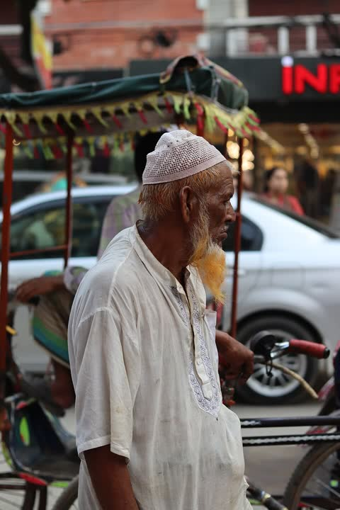
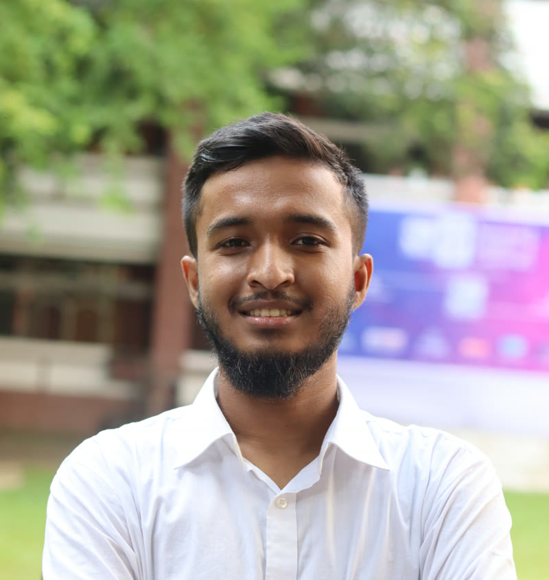
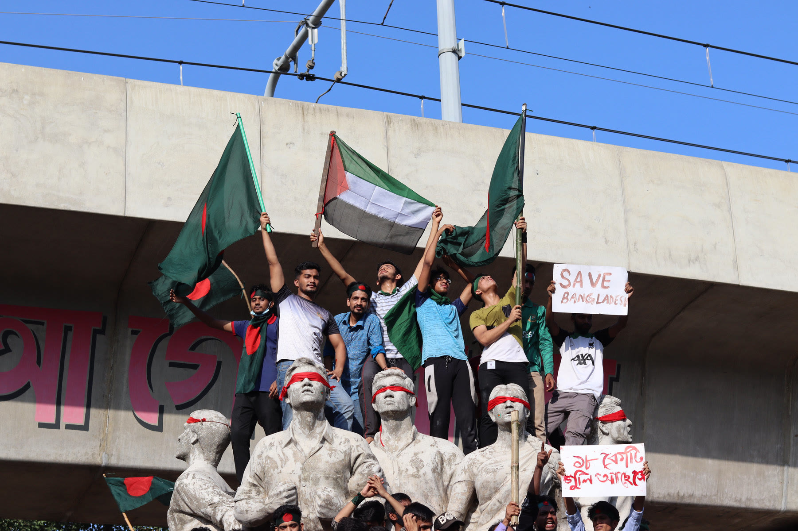
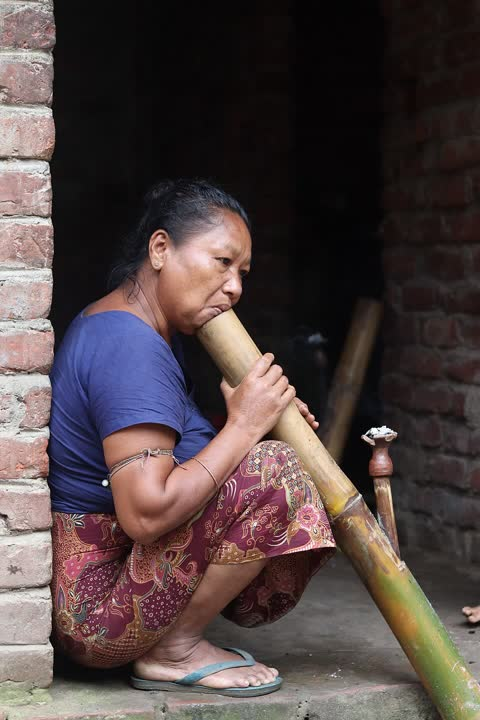

Photojournalism
Three years as an independent photojournalist covering Bangladesh’s politics, protests, markets and stages, on DSLR, drone and gimbal.
The 2024 uprising, Eid markets, street portraits
Photojournalist and multimedia journalist in Dhaka. I report for Nutshell Today, lead Project Korikath, and document the stories, languages and places of Bangladesh.


I study finance and banking at Bangladesh University of Professionals, and spend the rest of my time in the newsroom, in the field and in the open-knowledge movement. My photographs have run in hundreds of outlets around the world.
open photos and media files I’ve shared on Wikimedia Commons
of them rated Quality images by the Commons community
volunteers in 7+ countries in Project Korikath, which I lead
speakers of Chak, the language I’m documenting with Wikitongues
Different tools for one job: get the stories that matter in front of the people who need them, and keep knowledge open for those who struggle to reach it.

Three years as an independent photojournalist covering Bangladesh’s politics, protests, markets and stages, on DSLR, drone and gimbal.
The 2024 uprising, Eid markets, street portraits

Features and reports at Nutshell Today on memory, disability, work and power. Earlier at Jamuna Television, Splash and Dhaka on Air.
Seven features and reports in 2026

Wikimedia organiser and certified Organizer Lab trainer. I founded Project Korikath and represent the Open Knowledge Foundation in Bangladesh.
Wiki Loves Folklore, WikiWomen Bangladesh, Wikimania

As a Wikitongues fellow I’m documenting Chak, an unwritten Sino-Tibetan language, and recording oral culture with Indigenous communities.
Chak, Chakma, Marma and Garo
Packaging news, reporting from the field and writing features on the stories that shape lives in Bangladesh.
Project KorikathFounder and lead since 2021A photography project that fills Wikipedia’s visual gaps, with more than 100 volunteers in seven countries.
WikitonguesFellow, 2025 cohortDigitising Chak: recording 1,000 words in IPA for Wiktionary and documenting the community’s oral traditions.
Bangladesh documents Chak, one of its most endangered languages, and its organisers take the work to a conference in Ghana.

Polio survivor Mohammad Mohasin founded Bangladesh’s wheelchair cricket movement and now campaigns for public spaces that work for wheelchair users.

Shotgun pellets in the July 2024 crackdown caused more than 1,300 eye injuries and left many protesters permanently blind.
Newsrooms, community campaigns and global Wikimedia events, from my CV.
Packaging news, field reporting, interviewing people and working in the newsroom on stories that change lives.
Wrote short, verified news for the Jamuna web platform from the Octopus newsroom system and international wires, and researched special programmes.
Photographs published by hundreds of national and international media outlets.
Turned primary, authentic sources into short, clear news.
Researched national and world news and made it easy to follow on social feeds.
Leading 100+ members in 7+ countries: communication, Meta-Wiki and Commons documentation, finances and social campaigns.
Led Bangladesh’s largest folklore photo contest with 20 core and 100+ supporting volunteers: partnerships, nationwide photowalks, logistics and reporting.
Coordinating about 40 women Wikimedians working on the gender gap.
Recommended platforms; set up registration and the online conference; uploaded videos to Commons and YouTube; cleaned the data afterwards.
Wiki Loves Folklore, for leading the Bangladesh edition: community, partnerships and cultural outreach.
Wikimania, for my contribution to CampWiz, a toolkit for running campaigns on Wikimedia projects.
Wikimedia Foundation’s 12-week Organizer Lab. I’m now one of two certified Organizer Lab trainers in South Asia.
Wikimedia Commons featured my video “Beauty lachchi” on 5 March.
More than fifty of my photographs rated Quality images on Wikimedia Commons.
Storytelling, journalism, photography and videography with drone and gimbal, documentation, organising, management, finance, negotiation, critical thinking and clear communication.
Assignments, portraits, events, videography, or a question about one of my photographs. I read everything.
wasiulbahar@gmail.com